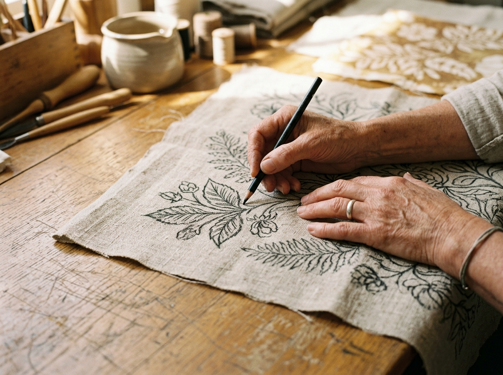
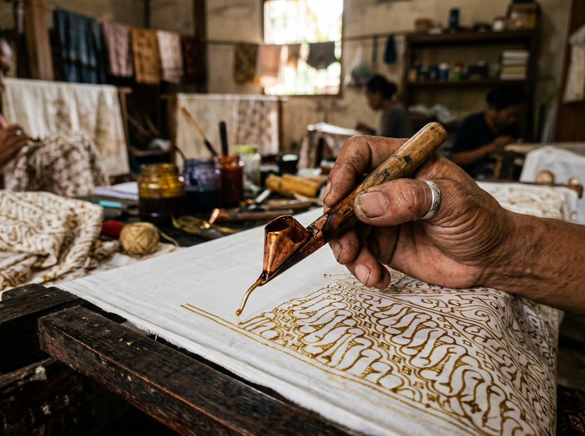
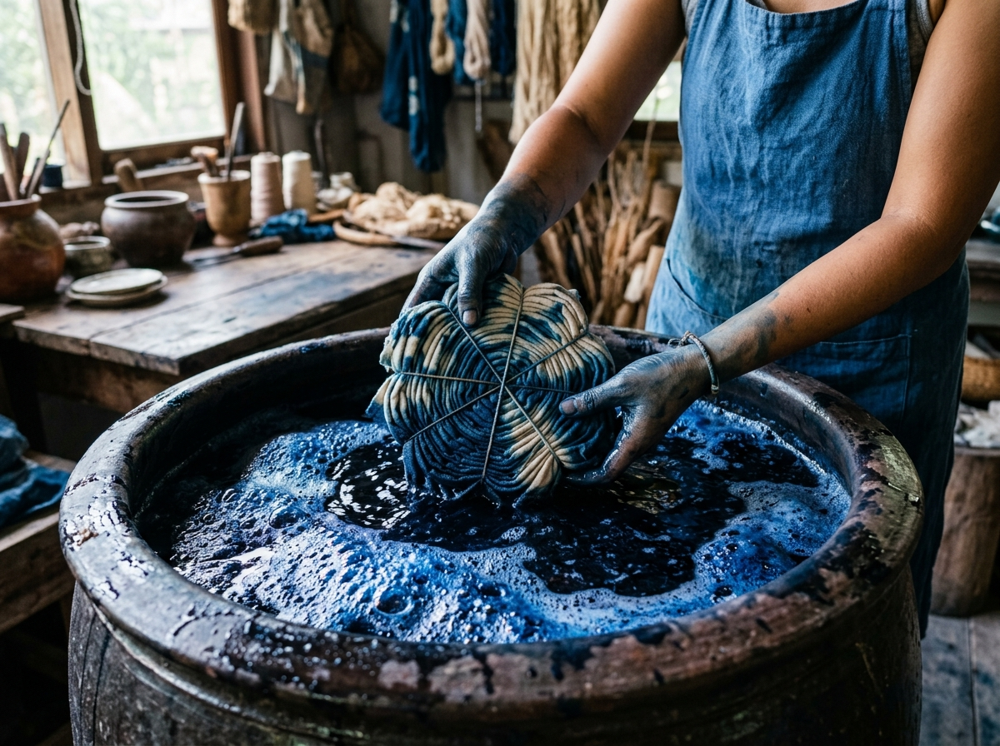
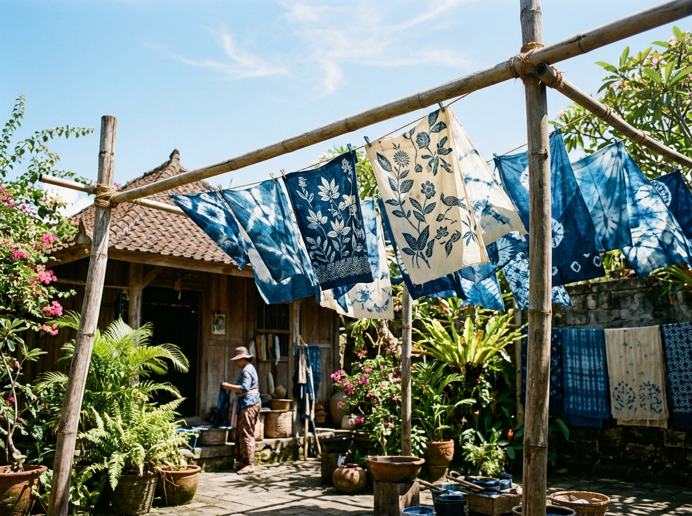
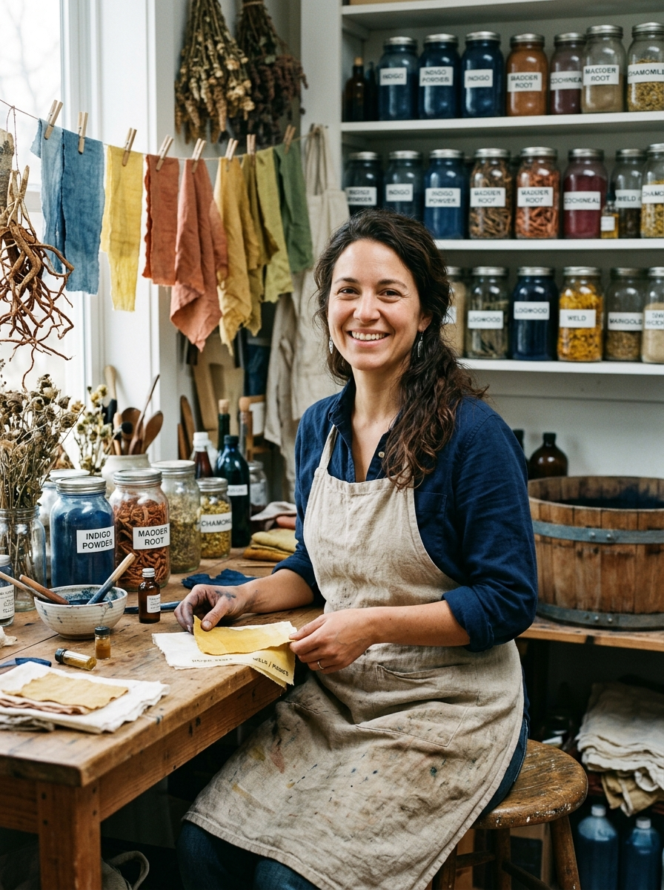
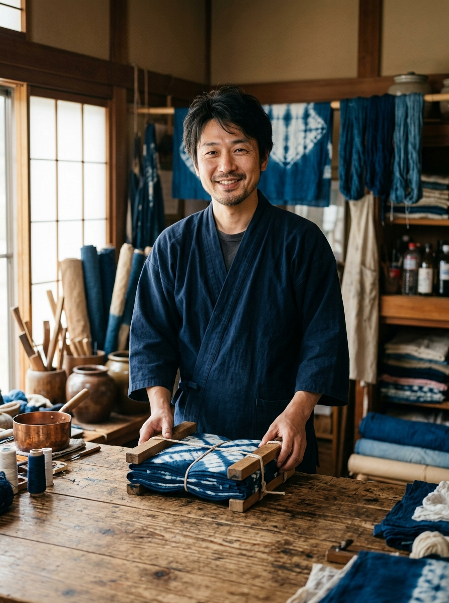
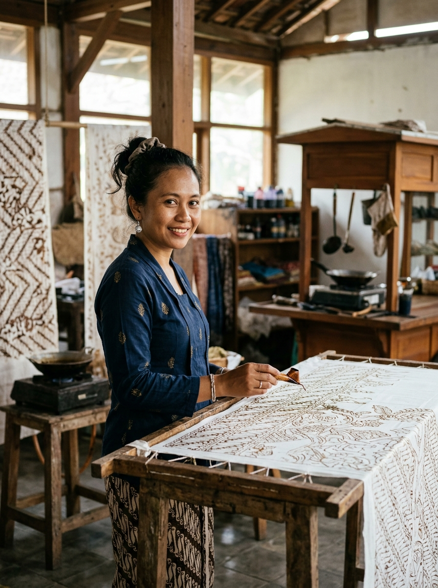

Crafting Soul into
Raw Botanical
Textiles.
A slow-craft textile sanctuary uniting Indonesian wax-resist Batik, Japanese Shibori, and living botanical fermentation into heirloom art.
Three Pillars of Our Atelier
Minimal planetary footprint, deep cultural respect, and intentional slow craftsmanship.
Living Ferment
Our indigo vats breathe. We ferment plant leaves with rice bran and limestone, producing deep blues without synthetic additives.
Canting & Resist
Hand-applied molten beeswax using traditional Javanese canting tools. Subtle crackle patterns celebrate the unique human touch.
Closed Loop
We dye on organic cotton, linen, and wild silk. Rinse water is neutralized through bio-sand filtration with zero workshop runoff.
From Raw Fiber to Living Art
Four deliberate stages completed patiently by hand across three to seven days.

01Motif Mapping
Artisan motifs are hand-sketched with charcoal onto raw, scoured organic cloth.

02Wax Resist
Molten beeswax is guided through fine copper canting seal designated patterns.

03Vat Submersion
Textiles undergo repeated oxygenation dips into living botanical fermentation vats.

04Wax Boil Sun Cure
Textiles are gently boiled to release wax, then sun-dried in the open courtyard breeze.
Hands Behind The Vats
Decades of combined textile wisdom, passing on endangered slow crafts to a new generation.

Natural Dye ChemistElena Rostova
Head of Dye Fermentation • 14 Yrs Experience
Trained in Kyoto and Java, Elena balances living microbes to preserve ancestral vat fermentation recipes.
"A living dye vat is alive; you must listen to its heartbeat."

Shibori Resist SculptorKenji Takahashi
Master of Itajime & Arashi • 19 Yrs Experience
Kenji crafts geometric tapestries using hand-carved cedar blocks, precise folding angles, and cord tensioning.
"Precision and surrender meet at the clamp edge."

Canting Batik ArtistMaya Wardani
Yogyakarta Heritage Artisan • 16 Yrs Experience
Born into a batik family in Java, Maya leads canting workshops and creates commissioned museum-grade hangings.
"The canting tool is simply an extension of the soul."
Create Your Own Botanical Heirloom.
Book an intimate weekend masterclass with our artisans or commission a bespoke botanical artwork tailored for your space.